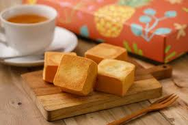

首頁
蔥油餅
北京烤鴨
心得感想
鳳梨酥

鳳梨酥是來自臺灣的點心，
其主要原料為麵粉、奶油、糖、蛋、冬瓜醬（也可用純鳳梨[1]或冬瓜混合鳳梨製作）。
外皮酥、內餡軟。以冬瓜餡製作的鳳梨酥有蔬菜冬瓜清爽口感，也稱為冬瓜酥[2]；
以冬瓜餡混合鳳梨餡製作的鳳梨酥帶有鳳梨甜香，或稱為冬瓜鳳梨酥；以純土鳳梨製成的鳳梨酥，
其酸度較高，又稱土鳳梨酥。因為鳳梨的臺灣話諧音為「旺來」，
帶有吉利興旺之意，而冬瓜有「好年冬」與甜甜蜜蜜的含意，帶有喜氣之意 [3]。